Barn · Chichester
Southend Barns
A group of farm barns on Selsey Road in Donnington, just south of Chichester, with separate barns for the ceremony and the reception, gardens, and…
- Capacity on request
- Rooms on site
- Exclusive use
26 venues · checked 11 October 2026
Barns, country houses, vineyards, castles and a few surprises across West Sussex, East Sussex and Brighton. Filter by what matters to you, then save the ones you like to compare side by side.
26 venues

Barn · Chichester
A group of farm barns on Selsey Road in Donnington, just south of Chichester, with separate barns for the ceremony and the reception, gardens, and…

Barn · Graffham
A family-run traditional flint barn with a large south-facing patio at the foot of the South Downs, hired as a blank space for you to fill with your…

Barn · Ringmer
An Elizabethan barn with a high vaulted ceiling on a working dairy farm, about five minutes from Lewes, open for weddings from late April to early…
Country house · Pulborough
A private estate between Petworth and Arundel with eleven acres of gardens, a Greek Loggia for outdoor ceremonies and a converted stable block for…
Country house · Buxted
An 18th-century Palladian mansion near Uckfield, now a hotel, with ceremonies for up to 120, evening parties for 200 and 43 bedrooms for guests.

Country house · Midhurst
The Cowdray estate at Midhurst offers two wedding settings, Cowdray House and the Walled Garden, with house stays, a B&B and cottages on the estate.

Vineyard · Lower Beeding
A wedding weekend at the house on the Leonardslee estate, with its gardens, lakes and vineyards: Friday dinner, the wedding on Saturday and breakfast…

Vineyard · Bolney
A working English wine estate near Haywards Heath, hosting wedding receptions in the Eighteen Acre Restaurant for up to 120 seated, with food from…

Vineyard · East Grinstead
A 150-acre wine estate near East Grinstead whose 15th-century Tithe Barn now holds a civil ceremony licence and seats 100.

Weddings from 2028
Vineyard · Alfriston
A wine estate near Alfriston that is rebuilding its wedding spaces.

Historic · Upper Dicker
A historic priory run by Sussex Past, with an Elizabethan Great Barn for up to 130, a Tudor house, and ceremonies indoors or in the orchard and…

Historic · Hailsham
A castle near Hailsham with ceremony rooms for 30 to 180, outdoor ceremonies in the Cloisters, a bridal suite in the castle and rooms for guests at…

Hotel · Brighton
A seafront hotel in Brighton where weddings take over the Marine Room, with a wedding breakfast, prosecco and wine included and a room for the couple…

Something different · Brighton
A family-run working farm on top of the South Downs, five miles from Brighton, with marquee weddings, sea views, a ceremony licence and a farmhouse…

Something different · Plumpton
A racecourse near Lewes with outdoor ceremonies in the Paddock, a marquee and rooms for the reception, exclusively yours for the day.

Historic · Amberley
A 900-year-old castle near Arundel, now a hotel, where couples marry against ancient stone with rolling hills beyond and dance into the evening…

Historic · Wadhurst
A castle in the Sussex countryside with ceremonies in the Drawing Room, the Winter Garden or a pavilion in the walled garden, and views from the…
Country house · Firle
A historic country house in its own parkland near Lewes, made over exclusively to your party, with civil ceremonies inside or out and menus from its…

Hotel · Lewes
A 16th-century town house hotel in the middle of Lewes, licensed for ceremonies in its Panelled and Terrace rooms, with 36 bedrooms a short walk from…

Hotel · Little Horsted
A Victorian Gothic country house hotel near Uckfield with landscaped gardens, a library, a garden room and a Victorian-style summerhouse.

Hotel · Uckfield
A golf and spa resort near Uckfield with ceremonies in a garden birdcage on the south lawns and receptions for up to 330 across two suites.
Hotel · Lower Beeding
A country house hotel at Lower Beeding, near Horsham, with ceremony and reception rooms, grounds for photographs, and food from dinner to a recovery…

Barn · Clapham
Restored barns in the South Downs above Worthing, with two outdoor bars, a red telephone box for photographs, venue styling included and new rooms on…

Barn · Fittleworth
A family-run barn in the South Downs near Pulborough, licensed for ceremonies indoors and out, with the barn, courtyard and meadow yours from the day…

Barn · Pulborough
A restored 17th-century barn on a working farm near Pulborough, with soaring oak beams, a private lake with views to the South Downs, and ceremonies…

Barn · Patching
A 65-acre family estate between Worthing and Arundel in the South Downs National Park, with a restored ceremony room, a fairy-lit barn, formal…
No venues match all of those. Try removing a filter.
Sussex splits naturally in two. West Sussex is estate country, with the barns, country houses and vineyards spread between Chichester, Petworth, Pulborough and Horsham. East Sussex and Brighton offer the sea, the Downs above Lewes and the county's castles and historic houses.
Capacity rules out venues faster than anything else. Leonardslee Gardens House seats 70, Kingscote's Tithe Barn 100, Michelham Priory's Great Barn 130, Southlands Barn 170, Bignor Park up to 200 with a marquee and East Sussex National up to 330.
If you want to marry and celebrate in one place, look for a civil ceremony licence. These Sussex venues say they have one, and some let you marry outdoors.
Catering rules, finish times and the season make the biggest difference to how a day feels. Gote Barn, for example, is unheated and only open from late April to early October. Our 28 questions to ask a wedding venue cover the rest.
26 Sussex venues so far, from barns and vineyards to castles, a priory, a racecourse and a seafront hotel. We add venues as we check them.
We read each venue's own website and brochure, record exactly what it says and link the source on the venue's page. Venues can confirm or correct their details at any time. How we check venues.
Bignor Park, Kingscote Estate, Michelham Priory, Devil's Dyke Farm, Plumpton Racecourse, Firle Place, Pelham House, East Sussex National, Fitzleroi Barn, Southlands Barn and Selden Barns state that they are licensed. See licensed wedding venues in Sussex.
Yes. Tap the heart on any venue to add it to your shortlist, which lines up capacity, ceremony, catering and rooms. No account needed.